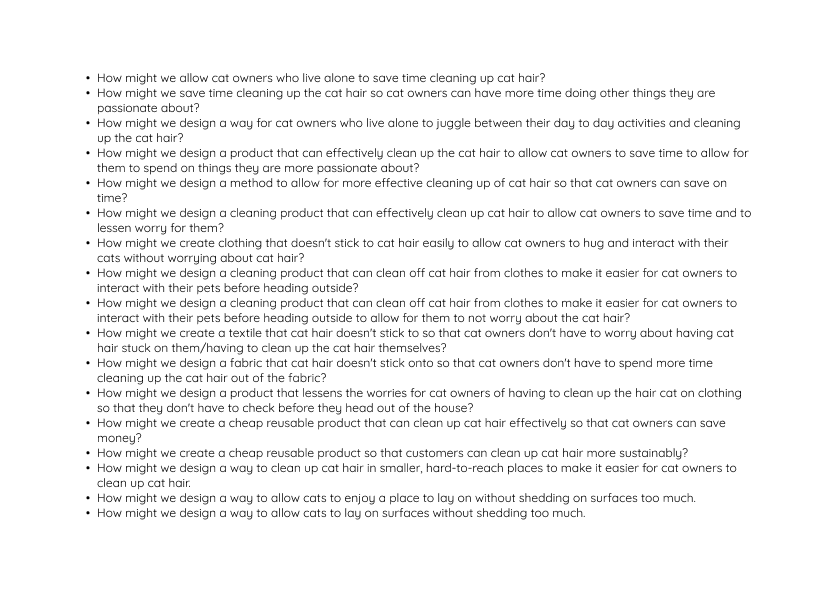

Define phase
DESIGN 100
I started to define the question/brief of the problem during this phase.
Define Phase Brainstorming
I started by brainstorming the problem space by listing any patterns, surprises, and conflicts I saw during my discovery phase. I then listed who we met, what we were interested to learn and what things would make a big difference if something were changed.
Problem statements
I then created problem statements by creating a situation for specific problems. This was done by filling out three sentences.
As a (who is the user?)
I want to (what do they want to do?)
So that I can (why do they want to do this?)

AEIOU
I filled out a table for the AEIOU exercise, listing the activities, environments, interactions, objects and users. This allowed me to think more about the specific activities and what was happening. It also helped me list the information I gained from the discovery phase.
Mindmap
I created a mindmap to show the problem and patterns seen visually.
From it, I could see how many of the problems affect the cat owners and how many of the subcategories still link back to them, such as time.

How might we statements
I then created "how might we" sentences that helped show the problem in a single sentence.
I first created many different sentences, with a lot of them based on the previous problem statements.

I found two I liked and got feedback from my tutor, Gabi. I then iterated my statement, adding more details to be more specific and allowing for a way a measurement could be done from within the statement.
The final how might we statement I created from this is:

Reflection
From doing the activities, I found that it allowed me to visually see the information from my insights and observations, which allowed me to interpret the information better.
The decision of the final how might we statement came from how a lot of the problem was linked with the amount of time cleaning up the cat hair, as they weren't able to spend as much time with their cat, and they were stressed with having the cat hair around their surroundings and on their clothing.
During this phase, a problem I had run into was creating the how might we statements, as they needed to be not too vague but not too narrow of a situation. The statement also needed to include how success would be measured from it. Getting feedback helped as I was able to see from another's perspective.